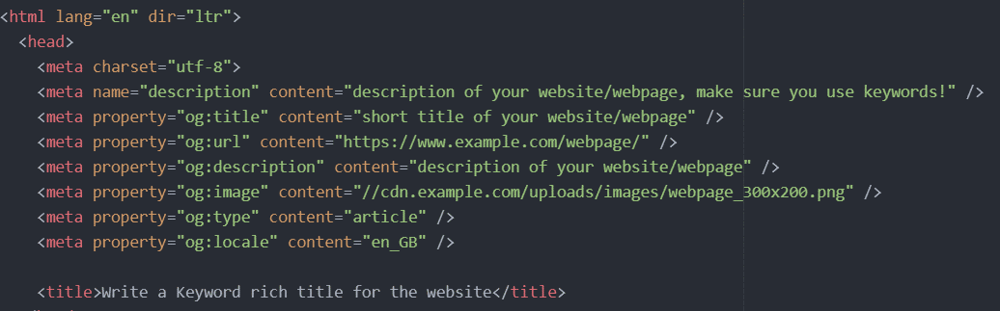

Step 1: Write a Keyword rich title for the website (see the tab of this page): max 65 chars
Step 2: Write a Keyword rich meta description for the website: max 155 chars
Step 3: Write a short title for the website which will be used for the social sharing: max 35 chars
Step 4: Add the link url for the social sharing
Step 5: Write a shorter desc for the social sharing: max 65 chars
Step 6: Add the thumbnail: Max 300kb, min 200x300 px

Step 7: Set the object type - article, in most cases
Step 8: Set the locale, which sets the language
See here for more info and specialisation for certain soc media sites https://stackoverflow.com/questions/19778620/provide-an-image-for-whatsapp-link-sharing
The code to add is this....
Note: if you don't set these the browser will try to guess them from your site
For setting up SEO keywords see...
https://schema.org/docs/gs.html